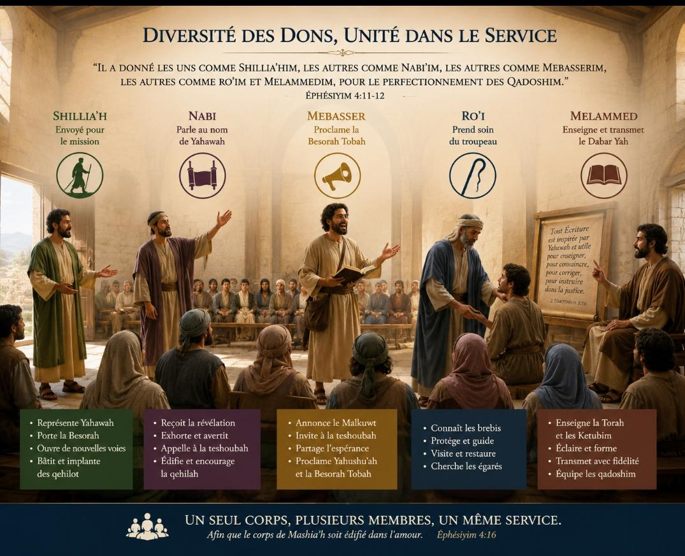
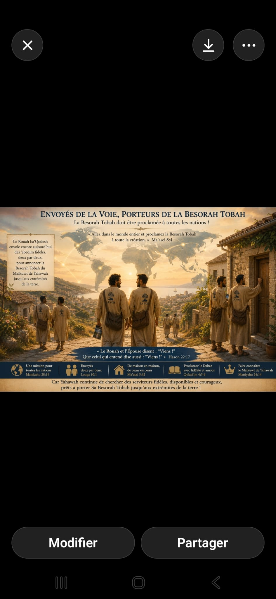

Des ʿEbedim consacrés à la proclamation de la Besorah Tobah
Qui sont-ils réellement selon les Ketubim Qadoshim ?
« Il a donné les uns comme shilliaḥim, les autres comme nabi'im, les autres comme mebaserim, les autres comme roʿim et melammedim, pour le perfectionnement des qadoshim en vue de l'œuvre du service et de l'édification du corps de Mashiaḥ. »
Éphésiyim 4:11-12
Introduction
Dans de nombreuses traductions modernes, le mot Mebasser est rendu par « évangélisateur » ou « évangéliste ». Pourtant, ces expressions ne reflètent qu'imparfaitement la richesse du terme employé dans les Ketubim Qadoshim.
Le Mebasser n'est pas simplement un orateur religieux ou une personne qui parle des Écritures. Il est avant tout un porteur officiel d'une nouvelle extraordinaire venant de Yahawah, un ʿEbed Meqoudash, consacré pour faire connaître fidèlement la Besorah Tobah du Malkuwt et appeler les humains à revenir vers Yahawah.
Une question mérite alors d'être posée : tous les tal'midim sont-ils des Mebasserim, ou bien Yahawah réserve-t-Il cette fonction à certains serviteurs qu'Il met à part pour une œuvre particulière ?
Les Ketubim Qadoshim nous apportent une réponse nuancée et profondément instructive.
1. Un mot aux racines profondes
Le terme Mebasser dérive de la racine hébraïque ב־ש־ר (B-S-R), qui signifie annoncer une bonne nouvelle, proclamer une délivrance ou apporter une nouvelle porteuse d'espérance.
De cette même racine proviennent les mots :
Besorah : la bonne nouvelle ;
Mebasser : celui qui proclame cette bonne nouvelle ;
Mebasseret : sa forme féminine.
Le nabi Yeshaʿeyah s'écrie :
« Qu'ils sont beaux sur les montagnes les pieds du mebasser qui annonce le shalôm, qui apporte une bonne nouvelle, qui proclame le salut et qui dit à Tsiyon : “Ton ’Èlohim règne !” »
Yeshaʿeyah 52:7
De même :
« Voici sur les montagnes les pieds du mebasser qui annonce une bonne nouvelle. »
Naḥoum 1:15
Le Mebasser apparaît ainsi comme un envoyé officiel chargé d'une proclamation qui apporte l'espérance, annonce la royauté de Yahawah et invite les humains à accueillir Son salut.
2. Tous les tal'midim rendent témoignage… mais tous ne sont pas Mebasserim
Yahushuʿaḥ a confié à tous Ses tal'midim une responsabilité universelle :
« Vous serez Mes témoins… »
Maʿasei 1:8
Il leur ordonne également :
« Allez donc et faites des tal'midim parmi toutes les nations. »
Mattiyahu 28:19-20
Après la dispersion provoquée par la persécution, les Ketubim rapportent encore :
« Ceux qui avaient été dispersés allaient de lieu en lieu en annonçant le Dabar. »
Maʿasei 8:4
Ces passages montrent que tout tal'mid est appelé à rendre témoignage, à partager son espérance et à parler du Dabar Yah selon les occasions qui se présentent.
Cependant, rendre témoignage n'implique pas nécessairement recevoir la fonction particulière de Mebasser.
3. Éphésiyim 4:11 révèle une fonction particulière
Šāʾūl écrit :
« Il a donné les uns comme shilliaḥim, les autres comme nabi'im, les autres comme mebaserim, les autres comme roʿim et melammedim. »
Éphésiyim 4:11
Puis il précise immédiatement leur objectif :
« pour le perfectionnement des qadoshim, pour l'œuvre du service et pour l'édification du corps de Mashiaḥ. »
Éphésiyim 4:12
L'expression « les uns… les autres… » montre clairement que Yahawah répartit diverses responsabilités au sein de la qehilah.
Tous ne sont pas shilliaḥim. Tous ne sont pas nabi'im. Tous ne sont pas roʿim. Tous ne sont pas melammedim. Et tous ne sont pas mebaserim.
Le Mebasser est donc un ʿEbed Meqoudash, appelé à consacrer d'une manière particulière son temps, ses forces et ses capacités à la proclamation fidèle de la Besorah Tobah.

4. Des ʿEbedim mis à part pour une œuvre spécifique
Le livre des Maʿasei rapporte un événement remarquable :
« Mettez-Moi à part Banabah et Šāʾūl pour l'œuvre à laquelle Je les ai appelés. »
Maʿasei 13:2
Banabah et Šāʾūl étaient déjà des serviteurs fidèles. Pourtant, le Rouaḥ ha'Qodesh demanda qu'ils soient mis à part pour une mission spécifique.
Autre exemple significatif : Philippos est présenté comme :
« Philippos, le Mebasser. »
Maʿasei 21:8
Il s'agit du seul homme explicitement désigné par ce titre dans les Ketubim, ce qui confirme que le terme peut désigner une fonction reconnue et particulière au sein de la qehilah.
Ces exemples suggèrent fortement que les Mebasserim sont des ʿEbedim consacrés, appelés à vouer une part essentielle de leur vie à la proclamation de la Besorah Tobah.
5. Un Mebasser peut exercer plusieurs responsabilités
Les fonctions décrites dans les Ketubim ne sont pas nécessairement exclusives.
Šāʾūl était shilliaḥ, mais aussi enseignant et proclamateur infatigable.
Képha était shilliaḥ et reçut également la responsabilité de prendre soin du troupeau de Yahushuʿaḥ.
Philippos est appelé Mebasser tout en exerçant d'autres formes de service.
De même aujourd'hui, un tal'mid mashiyaḥ peut être simultanément :
paqid ;
roʿi ;
ha'msharet haʿozer ;
et Mebasser,
selon les dons reçus de Yahawah et les besoins de la qehilah.
Les responsabilités ne se concurrencent pas ; elles se complètent harmonieusement pour l'édification du corps de Mashiaḥ.
6. Une définition proposée
À la lumière de l'ensemble des Ketubim Qadoshim, nous proposons la définition suivante :
Le Mebasser est un ʿEbed Meqoudash que Yahawah met à part afin de consacrer sa vie, d'une manière particulière, à la proclamation fidèle de la Besorah Tobah du Malkuwt, à l'appel à la teshoubah, au témoignage rendu à Yahushuʿaḥ et à l'édification de la qehilah selon le Dabar Yah.
Cette définition reconnaît simultanément deux vérités complémentaires :
tous les tal'midim sont appelés à rendre témoignage ;
certains reçoivent un appel particulier à exercer la fonction de Mebasser.
Conclusion
Les Mebasserim ne sont ni de simples conférenciers ni des prédicateurs occasionnels. Les Ketubim les présentent comme des ʿEbedim consacrés, mis à part pour annoncer fidèlement la Besorah Tobah et faire connaître le Malkuwt de Yahawah.
Leur objectif n'est pas d'acquérir une position ou des honneurs parmi les humains. Leur joie consiste à voir des hommes et des femmes découvrir le Dabar Yah, répondre à l'appel de la teshoubah et placer leur espérance dans les promesses du Malkuwt à venir.
Par leur fidélité, ils contribuent à l'édification de la qehilah et à l'accomplissement de la mission confiée par Yahawah.

❖ Une invitation à répondre à l'appel
Après avoir examiné ce que les Ketubim Qadoshim enseignent au sujet des Mebasserim, une question demeure pour chacun de nous.
Es-tu simplement un lecteur de la Besorah Tobah… ou Yahawah t'appelle-t-Il à en devenir un fidèle porteur ?
Le Rouaḥ ha'Qodesh déclara :
« Mettez-Moi à part Banabah et Šāʾūl pour l'œuvre à laquelle Je les ai appelés. »
Maʿasei 13:2
Lorsque Yahawah chercha un volontaire, le nabi répondit :
« Me voici ! Envoie-moi. »
Yeshaʿeyah 6:8
Et le dernier appel des Ketubim résonne encore aujourd'hui :
« Le Rouaḥ et l'Épouse disent : “Viens !” Que celui qui entend dise aussi : “Viens !” »
Hazon 22:17
Alors, pose-toi ces questions :
Es-tu un ʿEbed Meqoudash consacré à la proclamation de la Besorah Tobah ?
Es-tu un Mebasser appelé à annoncer le Malkuwt de Yahawah et à inviter les humains à la teshoubah ?
As-tu discerné l'invitation que le Rouaḥ ha'Qodesh adresse à ton cœur ?
Si oui… l'acceptes-tu ?
Car Yahawah continue de chercher des serviteurs fidèles, disponibles et courageux, prêts à porter Sa Besorah Tobah avec humilité, amour et persévérance jusqu'aux extrémités de la terre. 🌍📜